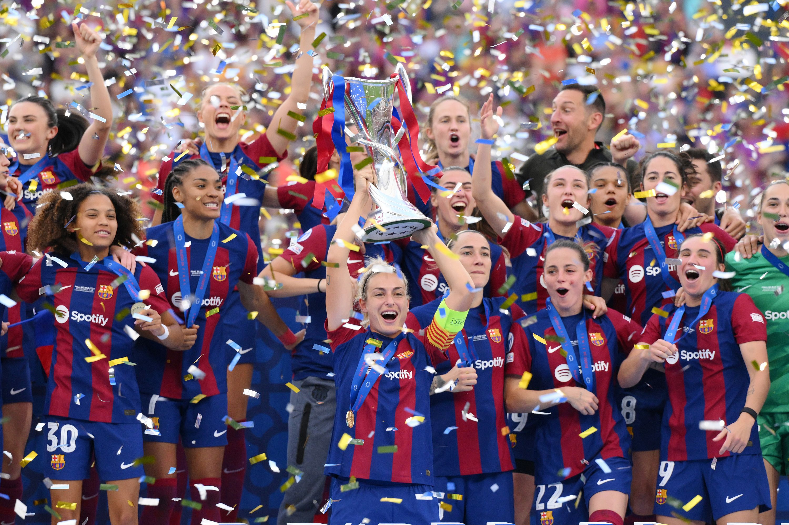
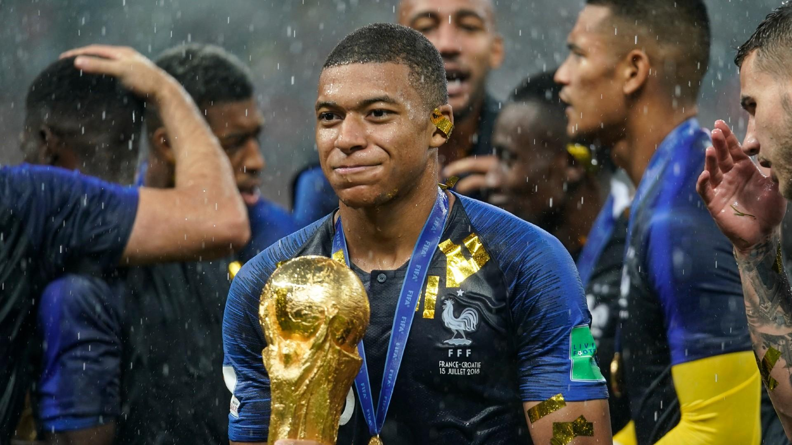
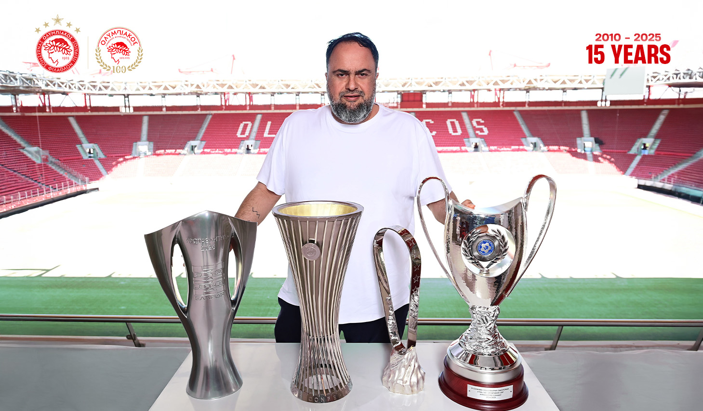

Modise wins the 1st ever TPC Cup in domanating fashion.
Modise Wins the First Ever FIFA Tournament
Modise has made history by winning the first-ever FIFA tournament, cementing his place as a legendary competitor. His journey through the competition was remarkable, showcasing exceptional skill and determination at every stage. From the group matches to the thrilling final, Modise demonstrated why he deserves to be recognized as a champion. His tactical intelligence and clutch performances under pressure set him apart from all other competitors, making his victory well-deserved and inspiring to everyone who watched.
What made Modise's tournament run special was his consistency and mental strength. He faced some incredibly tough opponents but never wavered in his focus, adapting his game and pushing through challenges with impressive resilience. His gameplay was a blend of technical excellence and creative problem-solving, with moments of brilliance that left fans in awe. Whether securing crucial victories in tight matches or dominating on the biggest stages, Modise proved he had what it takes to be the best.
As Modise lifted the trophy as the champion of the first-ever FIFA tournament, it represented the culmination of hard work and dedication. His achievement has inspired others and set a new standard for excellence in competitive gaming. This victory is not just a personal milestone but a moment that will be remembered in tournament history. Modise has shown that with passion and determination, greatness is achievable, and his name will forever be linked to this historic tournament victory.

Lwandle comes back to win 1st ever TPC Cup.
Lwandle's triumph in the 2nd edition of the TPC Cup in 2026 was a masterclass in FIFA excellence. From the tournament's opening matches, he demonstrated exceptional tactical awareness and precision with his carefully constructed team, methodically dismantling every opponent in his path. His journey to glory was defined by consistency and composure under pressure, as he navigated the fierce competition with a confidence that proved impossible to shake.
Throughout the tournament, Lwandle's performance was truly outstanding, showcasing the depth of skill required to dominate such competitive university-level play. His team's seamless coordination, paired with his expert decision-making during crucial moments, created an almost unstoppable force that opponents simply could not contain. Whether orchestrating devastating attacks or executing crucial defensive plays, Lwandle's comprehensive mastery of the game set him distinctly apart from his rivals.
Lwandle's victory represents a defining moment in his esports career and a testament to the dedication he's invested in perfecting his craft. His triumph not only captured the TPC Cup trophy but also earned him widespread respect from both fans and fellow competitors across the university. As his name is etched into the tournament's history, his outstanding performance will serve as the benchmark of excellence for all future editions of the TPC Cup.

Gee destroys Lwandle in one sided final!
In what will be remembered as the most one-sided championship match in TPC Cup history, Gee delivered an absolutely devastating performance to claim the tournament title with a staggering 4-0 victory. Playing with precision, flair, and relentless attacking intent, Gee's team never gave their opponents a moment to breathe, establishing control from the opening whistle and maintaining it throughout the entire 90 minutes. The scoreline barely tells the story of the dominance on display—this wasn't just a win, it was a complete masterclass that left spectators and commentators scrambling for words to describe the level of superiority demonstrated on the pitch.
From the first minute, it became clear that Gee had come to the TPC Cup final with something to prove. Their build-up play was crisp and purposeful, their transitions from defense to attack were lightning-fast, and their finishing was clinical. Goal after goal rippled the back of the net as Gee's opponents found themselves hopelessly outmatched, unable to mount any meaningful resistance or create legitimate scoring opportunities. The defense stood tall and unbreached, while the midfield controlled every aspect of the game's tempo and flow. With each additional goal, the confidence grew exponentially, and the gap between the two sides became even more apparent.
This historic 4-0 triumph cements Gee's legacy as one of the greatest TPC Cup champions ever to grace the tournament. The performance will be studied for years to come—a reminder of what elite-level FIFA play looks like when everything clicks into place. Gee's dominance wasn't just about superior skill, though that was certainly evident; it was about preparation, mentality, and an unwavering belief in their team's ability to execute under the brightest lights. As the final whistle blew and the trophy was lifted, Gee had definitively answered any questions about their place among the tournament's all-time greats, putting on a display that will forever be remembered as the TPC Cup's most decisive and dominant final performance.
